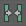

- 位于“建模”(Modeling)菜单集中。
编辑器(Editors)
- UV 编辑器(UV Editor)
-
显示“UV 编辑器”(UV Editor)。
请参见“UV 编辑器”(UV Editor)概述、“UV 编辑器”(UV Editor)菜单栏和“UV 编辑器”(UV Editor)标记菜单。
- UV 集编辑器(UV Set Editor)
-
显示“UV 集编辑器”(UV Set Editor)。请参见 UV 集编辑器(UV Set Editor)。
创建(Create)
- 指定棋盘格着色器(Assign Checker Shader)
-
在投影 UV 纹理坐标时，将具有棋盘格纹理的着色器指定给选定的网格。这有助于通过提供已知视觉参照来确定 UV 的对齐。默认设置为禁用。
- 自动(Automatic)
-
同时从多个角度将 UV 纹理坐标投影到选定对象上。选定对象周围会显示“自动映射投影”(Automatic Mapping Projection)操纵器，以便进行更精确的 UV 投影。
选择“UV > 自动”(UV > Automatic) >
 可设置自动映射选项(Automatic Mapping options)。
可设置自动映射选项(Automatic Mapping options)。
- 最佳平面纹理工具(Best Plane Texturing Tool)
-
根据从指定顶点计算的平面，将 UV 指定给选择的面。
注： 务必选择所有面，然后再调用工具，或者明确将选择遮罩设置为“多边形”(Polygon)。否则会发生选择问题。一次对一个图形使用“最佳平面纹理工具”(Best Plane Texturing Tool)。您仍然可以使用来自不同图形的顶点定义平面。 - 基于摄影机(Camera-Based)
-
基于当前摄影机视图为选定对象创建 UV 纹理坐标作为平面投影。也就是说，摄影机视图成为投影的平面。
选择“UV > 基于摄影机”(UV > Camera-Based) >
可设置基于摄影机的映射选项。
- 轮廓拉伸(Contour Stretch)
-
将纹理图像投影到对象的选定多边形上。轮廓拉伸贴图分析有四个角点的选择以确定如何最佳地在图像上拉伸多边形的 UV 坐标，而不是根据特定的形式进行投影。
选择“UV > 轮廓拉伸”(UV > Contour Stretch) >
可设置轮廓拉伸贴图选项(Contour Stretch Mapping options)。
- 基于法线(Normal-Based)
-
根据关联顶点的法线放置 UV。
- 圆柱形(Cylindrical)
-
通过从假想圆柱体向内投影 UV 纹理坐标，将其映射到选定对象上。
选择“UV > 圆柱形”(UV > Cylindrical) >
可设置圆柱形映射选项(Cylindrical Mapping options)。
- 平面(Planar)
-
通过从假想平面沿一个方向投影 UV 纹理坐标，将其映射到选定曲面网格上。
选择“UV > 平面”(UV > Planar) >
可设置平面映射选项(Planar Mapping options)。
- 球形(Spherical)
-
通过从假想球体向内投影 UV，将其映射到选定对象上。
选择“UV > 球形”(UV > Spherical) >
可设置球形映射选项(Spherical Mapping options)。
切割/缝合(Cut/Sew)
- 自动接缝(Auto Seams)
-
允许 Maya 自动选择或切割选定对象/UV 壳上的边，以形成适当的接缝。有关详细信息，请参见自动接缝选项(Auto Seams Options)。
- 切割 UV 边(Cut UV Edges)
-
沿选定边分割 UV，从而创建新的纹理边界。“UV 编辑器”(UV Editor)的工具栏中也提供了此功能。也可以单击“UV 编辑器”(UV Editor)工具栏上的 以使用此工具。请参见切割 UV 工具(Cut UV Tool)。
- 缝合 UV 边(Sew UV Edges)
-
沿选定边界附加 UV，但不在“UV 编辑器”(UV Editor)视图中一起移动它们。也可以单击“UV 编辑器”(UV Editor)工具栏上的  以使用此工具。请参见缝合 UV 工具(Sew UV Tool)。
- 分割 UV (Split UVs)
-
沿连接到选定 UV 点的边将 UV 彼此分离，从而创建边界。
提示： 通过单击“UV 编辑器”(UV Editor)工具栏上的“分割 UV”(Split UVs)图标 快速分离 UV。 - 删除 UV(Delete UVs)
-
将 UV 从网格的选定面中移除。如果希望将纹理映射到其中 UV 已删除的曲面网格区域，将需要使用 UV 投影映射功能重映射或重投影 UV。
- 合并 UV (Merge UVs)
-
使用“合并 UV”(Merge UVs)将单独的 UV 壳合并到一起。“合并 UV”(Merge UVs)与“缝合 UV”(Sew UVs)具有类似效果。但是，“合并 UV”(Merge UVs)更适合在多边形具有非流形几何体时合并壳。例如，如果有三个 UV 壳共享一条边（由于几何体是非流形的），则“合并 UV”(Merge UVs)可以合并其中两个 UV 壳，而不影响其他 UV 壳。如果在此示例中使用“缝合 UV”(Sew UVs)，则将组合所有壳，因为它们共享一条边。
有关详细信息，请参见合并 UV 选项(Merge UVs Options)。
- 3D 切割和缝合 UV 工具(3D Cut and Sew UV Tool)
-
使用此工具可切割和缝合场景中的 UV 边。
拖动到边上可在关联的 UV 壳中对其进行切割，或者按住 Shift 键并拖动可沿同一循环边切割其他边。
按住 Ctrl 键并拖动可缝合边，或者同时按住 Ctrl 和 Shift 键并拖动可沿同一循环边缝合其他边。注： 请注意，不要使用 Ctrl + Shift + S，否则您可能会无意中关闭关键帧切线标记菜单。选择“UV > 3D 切割和缝合 UV 工具”(UV > 3D Cut and Sew UV Tool) >
可设置“3D 切割和缝合 UV 工具”(3D Cut and Sew UV Tool)选项。
- 3D 抓取 UV 工具(3D Grab UV Tool)
-
使用此工具可以直接在场景中的模型上操纵 UV。
选择“UV > 3D 抓取 UV 工具”(UV > 3D Grab UV Tool) >
可设置“3D 抓取 UV 工具”(3D Grab UV Tool)选项。